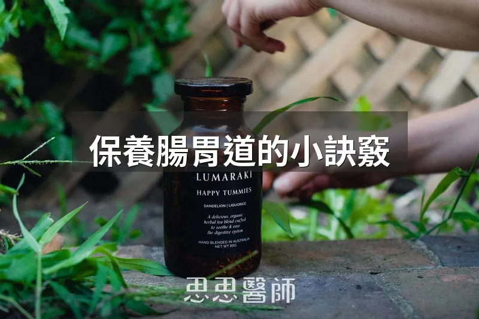

保養腸胃道的小訣竅

腸胃不舒服大概是我在門診最常被問到的主題之一，脹氣、消化不良、排便不順，很多人把這些症狀當成「正常現象」忍耐著過。其實腸胃道的保養沒有什麼複雜的秘方，多數關鍵都藏在日常的小習慣裡。我把之前整理過的腸胃保養原則重新展開，說清楚每一條背後的機轉，哪些確實有研究支持，哪些只是經驗法則，你自己判斷取捨的時候會更清楚。
睡了一整晚沒有進食進水，身體其實處於輕微脫水的狀態，血液也比較濃稠。起床先喝一杯水，除了補充水分，也能透過「胃結腸反射」刺激腸道蠕動，這也是為什麼很多人喝完水沒多久就有便意。加一點電解質（鈉、鉀）主要是幫助水分真正留在血管裡被身體利用，而不是喝進去很快就變成尿排掉，對睡眠時容易出汗、或本來喝水量就不多的人會更有感。
腸道黏膜表面有一層黏液，負責潤滑和保護，水分攝取不足時，這層黏液的品質和腸道蠕動的順暢度都會受影響，比較容易出現排便偏乾、偏硬的狀況。把喝水的時間安排在餐與餐之間，而不是集中在吃飯的時候，是比較溫和的做法，既能顧到一天的水分總量，又不會在消化最忙碌的時間裡增加胃的負擔。
「喝湯喝水會稀釋胃酸」是流傳很廣的說法，但腸胃功能正常的人，胃會自己調整胃酸分泌量來代償，不會因為喝水就讓消化效率大幅下降。重點其實該放在「份量」而不是「稀釋」：吃飯時一次灌下大量液體，容易把胃撐得過大，反而增加脹氣、甚至胃食道逆流的機會。少量湯水沒問題，但容易脹氣或逆流的人，吃飯時把湯水量控制節制一點，比糾結「稀釋」更實際。
腸道空腹時會啟動一種叫「移行性運動複合波（migrating motor complex）」的清潔性收縮，把殘留食物殘渣、細菌往下推，這個機轉只有在真正空腹、沒有食物持續進來時才會完整啟動。1977年一篇《Journal of Clinical Investigation》的研究追蹤18位小腸菌叢過度增生（SIBO）患者，發現其中5位的清潔收縮完全消失或嚴重紊亂，另外13位即使菌叢過度增生，收縮模式仍正常，說明這個機制和腸道菌相有關聯，但不是唯一因素。每天留出至少12小時不進食（晚餐後到次日早餐之間最容易做到），就是讓這個清潔收縮有機會跑完，而不是一直被下一餐打斷。
吃飯前看到、聞到食物，大腦會透過迷走神經啟動「頭期消化反應」，先分泌唾液和一部分胃酸，為接下來的消化做準備。吃飯時一邊看手機、一邊處理工作，注意力被分走，這個頭期反應會比較弱，消化液分泌的時間點和份量都打折扣，也比較容易吃得又快又多，事後才覺得脹。專心吃飯看起來很小，其實是在幫消化系統「預熱」。
高溫油炸、煎烤比蒸煮更容易產生「糖化終產物（AGEs）」，這類在高溫下由蛋白質和糖結合形成的化合物，吃進體內會增加氧化壓力和發炎反應。2025年《Cell Reports Medicine》一項交叉對照試驗，找了20位健康成人，用完全相同食材，分別吃兩週低溫烹調（蒸、煮）和兩週高溫烹調（烤、炸），結果低溫烹調那兩週血液中糖化終產物指標顯著下降，總膽固醇的變化也比高溫烹調那兩週理想。同樣的食材，換個烹調方式，對腸胃和代謝都更友善。
腹式呼吸時橫膈膜大幅度上下移動，會對腹腔器官和迷走神經產生規律刺激，臨床上用來觀察對腸胃症狀的幫助。2020年一篇文獻回顧整理10篇系統性回顧和15篇隨機對照試驗後指出，腹式呼吸對胃食道逆流、慢性便秘「可能有幫助」，但也坦承不少研究品質並不高。較具體的是2022年《Frontiers in Neuroscience》的試驗，找了85位腸躁症患者，一組每天練習每分鐘6次的深慢呼吸30分鐘，另一組不練習，6週後練習組症狀嚴重度分數明顯下降，直腸敏感度閾值也提高，代表腸道對刺激不再那麼敏感。
運動時身體會把血液優先分配給工作中的肌肉，腸胃道內臟血流會被相對壓縮，這叫「內臟血流再分配」。2011年《PLoS ONE》一篇研究讓健康男性進行高強度運動，發現腸道血流快速下降，代表腸道細胞受損的指標（I-FABP、I-BABP）同步上升，腸道通透性也顯著增加。飯後腸胃正忙著消化、需要大量血流時，立刻高強度運動，等於把本來有限的血流資源搶走，容易脹氣、抽痛、甚至噁心。飯後留一段緩和時間再運動，比較合理。
消化酶的角色是幫忙分解食物中的蛋白質、脂肪、澱粉，隨著年紀增加，身體自己分泌的消化酶量會逐漸下降。一篇針對高齡族群消化不良的隨機對照試驗發現，補充消化酶（搭配益生菌）之後，受試者的消化不良嚴重度評分、腹痛、脹氣症狀都比對照組明顯改善。要注意這個研究針對的是「本來就有消化不良症狀」的高齡族群，不是健康人也需要常規補充，所以原文用「如果有需要」這個前提是對的，不是人人都該吃。
抗生素清除致病菌的同時，也會連帶殺死腸道裡原本平衡共存的益菌。一篇《PNAS》的研究追蹤受試者使用環丙沙星（常見抗生素）前後的腸道菌相，發現用藥後約三分之一的菌種豐富度和多樣性受影響，部分受試者停藥後，腸道菌相也沒完全恢復原狀，等於留下長期改變。這不是說生病不能用抗生素，而是非必要的情況下別自己亂用，能少用一次，腸道菌相就少一次不確定能不能復原的衝擊。
腸胃道其實很講「節奏」：該吃飯的時候好好吃，該休息的時候真的讓它休息，這十個習慣拆開來看都不難，難的是每天持續做。
參考資料
3. Effects of Diaphragmatic Breathing on Health: A Narrative Review（Medicines, 2020）PMID 33076360
（本文由我規劃架構與觀點，並協同 AI 校正與潤飾語句）
 空腹小雞跟思思醫師一起斷食，順便養一隻小雞來養小雞 →
空腹小雞跟思思醫師一起斷食，順便養一隻小雞來養小雞 →
好朋友週信
每週五一封：《健康駭客週報》這集的研究重點，加上家醫專欄這週的新文章。免費，隨時可以退訂。
延伸閱讀

吸附身體毒素的磁鐵，活性碳
活性碳因龐大表面積能吸附毒素，短期搭配排毒策略時有幫助，但長期使用反而造成營養失衡，需與藥物間隔至少三小時使用。

鳳梨發酵飲料 Tepache
鳳梨發酵飲料提帕切含有益生菌和低度酒精成分，可在室溫下發酵三至五天製成，非常適合家庭釀造。

甘胺酸Glycine
甘胺酸佔人體蛋白質11.5%，是合成膠原蛋白、穀胱甘肽和肌酸的重要成分，能保護腸壁、降低體溫幫助睡眠，建議每日補充1000毫克。